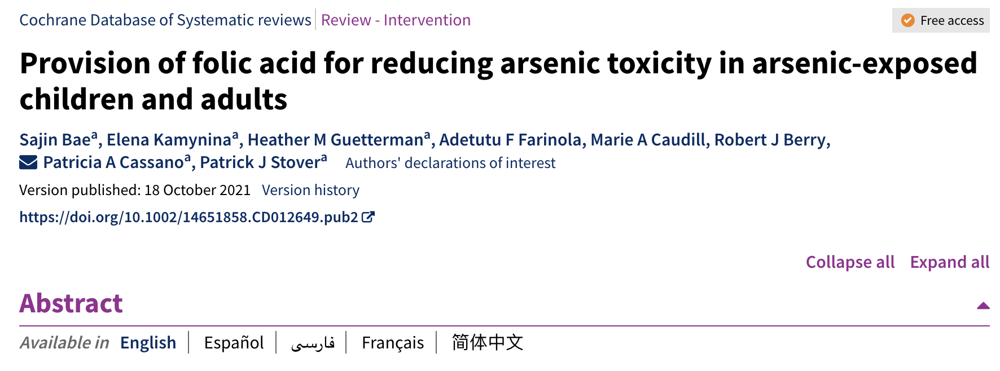

Reading together, without a keyword
Some connections between documents can be searched for. Others can't, because nobody could name the word. We find them with a cheap judge that asks one open question of a thousand pairs, and compare with an agent that searches.
1The data
One person's app log: 2,637 entries over 15 months, from 16 apps. Each square is one entry, one block per month. The person is user 002 of DynamicMem, a synthetic benchmark persona: a product designer in Amsterdam. Click an app to see where it sits and what an entry looks like.
2The task
Given one entry, find what in the rest of the log, read together with it, reveals something worth acting on. Here the something is a gift:
3What we found
We started from an evening chat on 6 November 2024 where the person asks an AI to render imaginary glass and ice. Our method returned 30 partner entries. Read together, they fall into three groups, each group says one thing, and the three combine into one idea. Click any dot or box to read what is behind it.
4How we did it
A keyword search can't do this: 10 of these 30 entries share no word with the anchor. Instead we name what we want and ask it of every pair. The OpenAI Decisions API answers a yes/no question about a pair with a probability, for about seven cents per thousand pairs, so we fill the question's blank with 1,000 random entries and read only the 30 that score highest.
The exact request, sent fifty times with twenty partners each:
5How grep did it
We gave the same anchor and task to a Claude Opus 5.5 agent with the whole log as files and only Read, Grep and Glob. It made 27 tool calls in two and a half minutes. Routine steps are folded; the entries that mattered are shown with the line it used highlighted.
6What each route used, across the year
7What's different
8Memory for a kernel agent
Sections 1 to 7 searched one person's app log. The same idea works on a very different kind of memory: notes on what earlier AI agents did while optimizing GPU kernels, read by a new agent about to do the same job.
The task is 02_kimi_linear_decode from KernelBench-mega. Each agent is Codex running GPT-6.1 Sol, with one H100 and one
hour, starting from scratch. Its score is how many times faster its kernel runs than the benchmark's PyTorch reference.
Can notes from earlier attempts help it write a faster kernel, and does it matter how it gets to them?
What earlier agents left behind
KernelBench publishes the full trajectories of agents working on its tasks. We had an LLM cut 823 of them into stretches, each ending where the agent got a test or benchmark result back, and write one note per stretch: what the agent tried, what it measured, and whether the change survived to the end of the run. Each run also gets a note on its final solution. That makes 33,192 notes, filed by hardware, task and model. Nobody curated them; it is simply a dump of files.
Browse it below and click a note to read it. Every H100 run of 02_kimi_linear_decode is here in full, with one sample run for each other hardware and task.
How the memory reaches the next agent
We compare two ways of handing this memory to an agent, files only and our method, and run each as a loop. In round 0, three agents work with no memory. In rounds 1, 2 and 3, each arm starts three new agents from scratch, one per lineage, and each learns from the previous run in its lineage. Every finished run is cut into notes the same way and added to its arm's memory (round 0 goes to both arms).
Here is one step of the loop, and where the two arms part ways:
Files only hands the agent everything and lets it decide what to look for. Our method decides where to look first: at the moments the previous run stalled. Each stuck point is an anchor, like the evening chat in section 3. Against each one, 5,000 sampled notes (plus the notes from earlier rounds) are scored with one question: would reading this note next to that point suggest a concrete way to make the kernel faster, a potentially useful direction to explore, or a way past the problem? A reader agent gets ten minutes to turn the top 30 per point into a one-page brief.
Results
- Both kinds of memory beat no memory. Over rounds 1 to 3, our method averaged 28.7× and files only 27.2×, against 24.0× without memory (one-sided permutation tests: p = 0.03 and 0.05).
- The best run reached 36.3×, about 1.5 times the best public H100 run (24.29×), which is itself in the memory.
Where the two fastest kernels came from
The two fastest kernels, 34.0× and 36.3×, share a trick that none of the other 19 use, and both came from
our method. The trick is DP4A. This task stores its weights as 4-bit integers, and most agents convert them to
bf16 before multiplying. DP4A goes the other way: it rounds the activations to 8-bit integers too and multiplies integer by
integer with __dp4a, a GPU instruction that does four 8-bit multiply-adds at once. The arithmetic per weight
drops, at a small loss of precision that stays within the benchmark's tolerance.
Here is how the first of the two got there:
With identical weights, wider loads improve the paired measurement by about 0.8%… Shared activations are slower.
W4A8 dp4a integration passes correctness in the fused decode kernel, from the 24.29× run, measuring
906 GB/s vs 451 for the production loop.
Prototype groupwise DP4A GEMVs early.
In round 3, another lineage's brief again led with DP4A, this time with an exact fallback in case it hurt accuracy. That agent reached 36.3×. In all, four of our nine agents tried DP4A and two kept it.
Files-only agents had it within reach
Seven of the nine files-only agents opened the final note of the 24.29× run, which says the
kernel used W4A8
. They opened it in their first few minutes, while collecting code to
start from, then built on the code from earlier rounds, none of which uses DP4A. Two of them did write a DP4A version about halfway through their runs; one saw
the MoE routing change, the other saw no speedup, and both dropped it. All nine files-only kernels convert the weights
to bf16.dp4a GEMVs
The note itself was not hard to find. Rank the same 5,000 notes by keyword match (BM25) against the stuck agent's own messages, and it comes second. What differed was when, and for what, each one searched. The files-only agents did nearly all their searching in the first few minutes, before they had hit any wall, and they grepped for code to start from: final solutions, kernels and benchmark results in the earlier rounds' logs and the top public runs. When they came back to memory later, it was to look up code in those same logs. Our method searched from the points where an agent was stuck, and the DP4A note was the best match for one of them.
When agents read memory
Each row is one agent, sorted by final speedup; the axis is how far into its run it was, with the first 15% stretched. Both arms read memory lightly and early. The two agents that kept DP4A started it 8% and 12% of the way in, following their briefs; the files-only agents that tried it started around halfway.
Caveats
- Three agents per arm per round, on one task and one GPU.
- The DP4A story rests on two runs.
- No no-memory agents ran alongside round 3, so its rise may be run-to-run variation rather than learning.
9The same question, on other corpora
In an app log, almost any two entries can be read together in some way. A harder test is a corpus where most pairs are unrelated. We ran the same kind of pipeline, the Decisions judge scoring one open question for every pair, on 719 research-mathematics manuscripts (openai/math) and on 68,201 passages of medical evidence reviews (Cochrane). Three of the connections it surfaced are below, each shown with the documents it was built from.
First, three research papers on C*-algebras, the mathematical objects used to describe quantum systems.
Two notions appear in all three. A quasitrace is a consistent way of assigning a size between 0 and 1 to the parts of an algebra. An algebra is properly infinite if it contains two non-overlapping copies of itself.
Next, two reviews of folic acid: one about malaria drugs, one about arsenic poisoning.

Finally, two reviews on preventing urinary tract infections, where the link is a contradiction between their numbers.
In each example the link is written in none of the documents: a chain of three published results, a vitamin shared by two unrelated programmes, a contradiction between two reported numbers, and in section 3 a shared material. A keyword search can bring the documents up, but it cannot surface a link that none of them states.
Data: DynamicMem user 002 (synthetic, MIT). Judge: OpenAI Decisions (gpt-6-luna) through the AI Sandbox,
1,000 partners per anchor. The groups, conclusions and our idea were written by Claude Opus 5.5 after reading the 31
entries; the grep agent is one claude -p session (Opus 5.5, Read/Grep/Glob). "Uses the anchor's words" means
the person's own text contains glass, ice, frost, Octane, 20mm, permafrost or crystal.
Section 8: stuck points picked by GPT-6.1 Sol (high); notes scored by OpenAI Decisions (gpt-6-luna,
AI Sandbox), 5,000 sampled notes plus every earlier-round note per stuck point; briefs by a 10-minute GPT-6.1 Sol reader
from the five top-30 lists. All 21 final kernels pass check.py and make one kernel launch and no copies per
step. Trajectory counts come from the agents' shell commands. Keyword search: BM25 (k1 = 1.2, b = 0.75) over the same 5,000 sampled notes, querying with the stuck agent's own messages from that stretch. Run folder:
experiments/explore_agents/runs/kb_loop_h100_sol61_60min_2026-10-16_144513.
Section 9, mathematics: 127,584 passages from the 719 manuscripts of
openai/math (Apache‑2.0, commit fd4aeeb). The three
papers are A counterexample to Kaplansky's quasitrace conjecture and failure of tensor‑product stable
finiteness, The Kirchberg–Rørdam character criterion and Weak pure infiniteness and
O‑infinity absorption; the first two carry Lean formalizations in that repository. Section 9, medicine: 68,201 abstract sections from Cochrane reviews. Arsenic example: the anchor was the background
section of Folic acid supplementation and malaria susceptibility and severity among people taking antifolate antimalarial
drugs; 10,000 partners were judged, and one claude -p reader (Opus 5.5, with web search) read the
top 100, in which the conclusions of Provision of folic acid for reducing arsenic toxicity in arsenic-exposed children
and adults (2021) ranked 62nd. Cranberry example: the anchor was the main-results section of
Cranberries for preventing urinary tract infections (2023); 1,000 partners were judged, and the objectives section of
Probiotics for preventing urinary tract infections in adults and children (2015) ranked second. One
claude -p call (Opus 5.5) per top-30 pair proposed what the two show together; this proposal was then
verified against the probiotics review's results. Mathematics: 5,000 partners judged per anchor and one
claude -p reader given the top 100 partners in full and the corpus as files. Quotations are cut verbatim from
the passages.